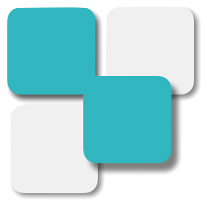

席替えメーカー
mdi-chevron-double-right
mdi-file-document-box-plus-outline条件
mdi-grid座席数を指定する
mdi-sort-ascending前後で指定する
最前列
前2列
後ろ2列
最後列
mdi-target-variant特定の座席に固定する
を、前から
列目、左から
列目に固定する
mdi-arrow-collapse生徒同士を近づける
と
の間を
席以下にする
mdi-arrow-expand生徒同士を離す
と
の間を
席以上空ける
mdi-sync席替え
プライバシーポリシー
プライバシーポリシー
mdi-close
サイト運営者（以下「当方」と言います）は、当方の提供するサービス（以下「当サービス」と言います）における、ユーザーについての個人情報を含む利用者情報の取扱いについて、
以下の通りプライバシーポリシー（以下「ポリシー」と言います）を定めます。
第1条（収集する利用者情報及び収集情報）
本ポリシーにおいて、「利用者情報」とは、ユーザーの識別に係る情報、通信サービス上の行動履歴、その他ユーザーまたはユーザーの端末に関連して生成または蓄積された情報であって、
本ポリシーに基づき当方が収集するものを意味するものとします。本サービスにおいて当方が収集する利用者情報は、その収集方法に応じて、以下のようなものとなります。
1.リファラ
2.IPアドレス
3.サーバーアクセスログに関する情報
4.Cookie
5.本サービスが提供する各種ツールの入力情報
第2条（利用目的）
本サービスのサービス提供にかかわる利用者情報の具体的な利用目的は以下です。
1.ユーザーのトラフィック測定及び行動測定のため
2.広告の配信、表示及び効果測定のため
3.本サービスが提供する各種ツールの品質向上のため
第3条（アクセス解析ツール）
1.当サービスでは、Googleによるアクセス解析ツール「Googleアナリティクス」・LogRocket社の提供するサービスである「LogRocket」を使用しています。
このGoogleアナリティクス・LogRocketはデータの収集のためにCookieを使用しています。
2.この機能はCookieを無効にすることで収集を拒否することが出来ますので、お使いのブラウザの設定をご確認ください。
この規約に関しての詳細はGoogleアナリティクスサービス利用規約や
Googleポリシーと規約・
LogRocketプライバシポリシーをご覧ください。
第4条（第三者提供）
当方は、利用者情報のうち、個人情報については、あらかじめユーザーの同意を得ないで、第三者（日本国外にある者を含みます）に提供しません。
但し、次に掲げる必要があり第三者（日本国外にある者を含みます。）に提供する場合はこの限りではありません。
1.当方が利用目的の達成に必要な範囲内において個人情報の取り扱いの全部または一部を委託する場合
2.事業の継承に伴って個人情報が提供される場合
3.第3項の定めに従って、提携先または情報収集モジュール提供者へ個人情報が提供される場合
4.国の機関もしくは地方公共団体またはその委託を受けた者が法令の定めるジムを遂行することに対して協力する必要がある場合であって、
ユーザーの同意を得ることによって当該事務の遂行に師匠を及ぼすおそれがある場合
5.その他、個人情報の保護に関する法律（以下「個人情報保護法」と言います ）その他の法令で認められる場合
第5条（プライバシーポリシーの変更手続）
当方は、必要に応じて、本ポリシーを変更します。但し、法令上ユーザーの同意が必要となるような本ポリシーの変更を行う場合、変更後の本ポリシーは、当方所定の方法で変更に同意したユーザーに対してのみ適用されるものとします。
なお、当方は、本ポリシーを変更する場合には、変更後の本ポリシーの施行時期及び内容を当ウェブサイト上での表示その他適切な方法により周知し、またはユーザーに通知します。
開発者Twitter
利用規約
mdi-close
本利用規約（以下「本規約」と言います。）には、本サービスの提供条件及びサイト運営者（以下「当方」と言います）とユーザーの皆様との間の権利義務関係が定められています。
本サービスの利用に際しては、本規約の全文をお読みいただいたうえで、本規約に同意いただく必要があります。
第1条（適用）
1.本規約は、本サービスの提供条件及び本サービスの利用に関する当方とユーザーとの間の権利義務関係を定めることを目的とし、
ユーザーと当方との間の本サービスの利用に関わる一切の関係に適用されます。
2.本規約の内容と、本規約外における本サービスの説明等とが異なる場合は、本規約の規定が優先して適用されるものとします。
第2条（定義）
本規約において使用する以下の用語は、各々以下に定める意味を有するものとします。
1.「知的財産権」とは、著作権、特許権、実用新案権、意匠権、商標権その他の知的財産権（それらの権利を取得し、またはそれらの権利につき登録等を出願する権利を含みます。）を意味します。
2.「当ウェブサイト」とは、そのドメインが「sekigae.jp」である、当方が運営するウェブサイト（理由の如何を問わず、当方のウェブサイトのドメインまたは内容が変更された場合は、
当該変更後のウェブサイトを含みます。）を意味します。
3.「本サービス」とは、当方が提供する席替えメーカーという名称のサービス（理由の如何を問わずサービスの名称または内容が変更された場合は、当該変更後のサービスを含みます。）を意味します。
第3条（禁止事項）
ユーザーは、本サービスの利用にあたり、以下の行為をしてはなりません。
1.法令または公序良俗に違反する行為
2.犯罪行為に関連する行為
3.本サービスの内容等、本サービスに含まれる著作権、商標権ほか知的財産権を侵害する行為
4.当社、ほかのユーザー、またはその他第三者のサーバーまたはネットワークの機能を破壊したり、妨害したりする行為
5.本サービスによって得られた情報を商業的に利用する行為
6.当社のサービスの運営を妨害するおそれのある行為
7.不正アクセスをし、またはこれを試みる行為
8.他のユーザーに関する個人情報等を収集または蓄積する行為
9.不正な目的を持って本サービスを利用する行為
10.本サービスの他のユーザーまたはその他の第三者に不利益、損害、不快感を与える行為
11.他のユーザーに成りすます行為
12.当社が許諾しない本サービス上での宣伝、広告、勧誘、または営業行為
13.面識のない異性との出会いを目的とした行為
14.当社のサービスに関連して、反社会的勢力に対して直接または間接に利益を供与する行為
15.その他、当社が不適切と判断する行為
第4条（本サービスの提供の停止等）
1.当社は、以下のいずれかの事由があると判断した場合、ユーザーに事前に通知することなく本サービスの全部または一部の提供を停止または中断することができるものとします。
1.本サービスにかかるコンピュータシステムの保守点検または更新を行う場合
2.地震、落雷、火災、停電または天災などの不可抗力により、本サービスの提供が困難となった場合
3.コンピュータまたは通信回線等が事故により停止した場合
4.その他、当社が本サービスの提供が困難と判断した場合
2.当社は、本サービスの提供の停止または中断により、ユーザーまたは第三者が被ったいかなる不利益または損害についても、一切の責任を負わないものとします。
第5条（保証の否認及び免責）
1.当方は、本サービスがユーザーの特定の目的に適合すること、期待する機能・商品的価値・正確性・有用性を有すること、
ユーザーによる本サービスの利用がユーザーに適用のある法令または業界団体の内部規則等に適合すること、
継続的に利用できること、及び不具合が生じないことについて、明示又は黙示を問わず何ら保証するものではありません。
2.当方は、本サービスに関してユーザーが被った損害について賠償する責任を負わないものとし、また、付随的損害、間接損害、特別損害、将来の損害及び逸失利益にかかる損害については、
賠償する責任を負わないものとします。
3.本サービスまたは当方ウェブサイトに関連してユーザーと他のユーザーまたは第三者との間において生じた取引、連絡、紛争等については、ユーザーが自己の責任によって解決するものとします。
第6条（本サービスの内容の変更、終了）
1.当方は、当方の都合により、本サービスの内容を変更し、または提供を終了することができます。
2.当方が本サービスの提供を終了する場合、当方はユーザーに事前に通知するものとします。
第7条（利用規約の変更）
当社は、必要と判断した場合には、ユーザーに通知することなくいつでも本規約を変更することができるものとします。
なお、本規約の変更後、本サービスの利用を開始した場合には、当該ユーザーは変更後の規約に同意したものとみなします。
第8条（個人情報の取扱い）
当社は、本サービスの利用によって取得する個人情報については、当社「プライバシーポリシー」に従い適切に取り扱うものとします。
第9条（権利義務の譲渡の禁止）
ユーザーは、当社の書面による事前の承諾なく、利用契約上の地位または本規約に基づく権利もしくは義務を第三者に譲渡し、または担保に供することはできません。
第10条（分離可能性）
本規約のいずれかの条項またはその一部が、消費者契約法その他の法令等により無効または執行不能と判断された場合であっても、
本規約の残りの規定及び一部が無効または執行不能と判断された規定の残りの部分は、継続して完全に効力を有するものとします。
第11条（準拠法・裁判管轄）
1.本規約の解釈にあたっては、日本法を準拠法とします。
2.本サービスに関して紛争が生じた場合には、当社の本店所在地を管轄する裁判所を専属的合意管轄とします。
更新情報
更新情報
mdi-close
2021.03.10 β版公開
mdi-chevron-double-left
mdi-grid
座席数を指定する
mdi-sort-ascending
前後で指定する
mdi-target-variant
特定の座席に固定する
mdi-arrow-collapse
生徒同士を近づける
mdi-arrow-expand
生徒同士を離す
mdi-sync
今の座席
mdi-information-outline
クリックで性別を切り替えることができます
席替え後
mdi-information-outline
座席をつかんで入れ替えることができます
利用規約
mdi-close
本利用規約（以下「本規約」と言います。）には、本サービスの提供条件及びサイト運営者（以下「当方」と言います）とユーザーの皆様との間の権利義務関係が定められています。
本サービスの利用に際しては、本規約の全文をお読みいただいたうえで、本規約に同意いただく必要があります。
第1条（適用）
1.本規約は、本サービスの提供条件及び本サービスの利用に関する当方とユーザーとの間の権利義務関係を定めることを目的とし、
ユーザーと当方との間の本サービスの利用に関わる一切の関係に適用されます。
2.本規約の内容と、本規約外における本サービスの説明等とが異なる場合は、本規約の規定が優先して適用されるものとします。
第2条（定義）
本規約において使用する以下の用語は、各々以下に定める意味を有するものとします。
1.「知的財産権」とは、著作権、特許権、実用新案権、意匠権、商標権その他の知的財産権（それらの権利を取得し、またはそれらの権利につき登録等を出願する権利を含みます。）を意味します。
2.「当ウェブサイト」とは、そのドメインが「sekigae.jp」である、当方が運営するウェブサイト（理由の如何を問わず、当方のウェブサイトのドメインまたは内容が変更された場合は、
当該変更後のウェブサイトを含みます。）を意味します。
3.「本サービス」とは、当方が提供する席替えメーカーという名称のサービス（理由の如何を問わずサービスの名称または内容が変更された場合は、当該変更後のサービスを含みます。）を意味します。
第3条（禁止事項）
ユーザーは、本サービスの利用にあたり、以下の行為をしてはなりません。
1.法令または公序良俗に違反する行為
2.犯罪行為に関連する行為
3.本サービスの内容等、本サービスに含まれる著作権、商標権ほか知的財産権を侵害する行為
4.当社、ほかのユーザー、またはその他第三者のサーバーまたはネットワークの機能を破壊したり、妨害したりする行為
5.本サービスによって得られた情報を商業的に利用する行為
6.当社のサービスの運営を妨害するおそれのある行為
7.不正アクセスをし、またはこれを試みる行為
8.他のユーザーに関する個人情報等を収集または蓄積する行為
9.不正な目的を持って本サービスを利用する行為
10.本サービスの他のユーザーまたはその他の第三者に不利益、損害、不快感を与える行為
11.他のユーザーに成りすます行為
12.当社が許諾しない本サービス上での宣伝、広告、勧誘、または営業行為
13.面識のない異性との出会いを目的とした行為
14.当社のサービスに関連して、反社会的勢力に対して直接または間接に利益を供与する行為
15.その他、当社が不適切と判断する行為
第4条（本サービスの提供の停止等）
1.当社は、以下のいずれかの事由があると判断した場合、ユーザーに事前に通知することなく本サービスの全部または一部の提供を停止または中断することができるものとします。
1.本サービスにかかるコンピュータシステムの保守点検または更新を行う場合
2.地震、落雷、火災、停電または天災などの不可抗力により、本サービスの提供が困難となった場合
3.コンピュータまたは通信回線等が事故により停止した場合
4.その他、当社が本サービスの提供が困難と判断した場合
2.当社は、本サービスの提供の停止または中断により、ユーザーまたは第三者が被ったいかなる不利益または損害についても、一切の責任を負わないものとします。
第5条（保証の否認及び免責）
1.当方は、本サービスがユーザーの特定の目的に適合すること、期待する機能・商品的価値・正確性・有用性を有すること、
ユーザーによる本サービスの利用がユーザーに適用のある法令または業界団体の内部規則等に適合すること、
継続的に利用できること、及び不具合が生じないことについて、明示又は黙示を問わず何ら保証するものではありません。
2.当方は、本サービスに関してユーザーが被った損害について賠償する責任を負わないものとし、また、付随的損害、間接損害、特別損害、将来の損害及び逸失利益にかかる損害については、
賠償する責任を負わないものとします。
3.本サービスまたは当方ウェブサイトに関連してユーザーと他のユーザーまたは第三者との間において生じた取引、連絡、紛争等については、ユーザーが自己の責任によって解決するものとします。
第6条（本サービスの内容の変更、終了）
1.当方は、当方の都合により、本サービスの内容を変更し、または提供を終了することができます。
2.当方が本サービスの提供を終了する場合、当方はユーザーに事前に通知するものとします。
第7条（利用規約の変更）
当社は、必要と判断した場合には、ユーザーに通知することなくいつでも本規約を変更することができるものとします。
なお、本規約の変更後、本サービスの利用を開始した場合には、当該ユーザーは変更後の規約に同意したものとみなします。
第8条（個人情報の取扱い）
当社は、本サービスの利用によって取得する個人情報については、当社「プライバシーポリシー」に従い適切に取り扱うものとします。
第9条（権利義務の譲渡の禁止）
ユーザーは、当社の書面による事前の承諾なく、利用契約上の地位または本規約に基づく権利もしくは義務を第三者に譲渡し、または担保に供することはできません。
第10条（分離可能性）
本規約のいずれかの条項またはその一部が、消費者契約法その他の法令等により無効または執行不能と判断された場合であっても、
本規約の残りの規定及び一部が無効または執行不能と判断された規定の残りの部分は、継続して完全に効力を有するものとします。
第11条（準拠法・裁判管轄）
1.本規約の解釈にあたっては、日本法を準拠法とします。
2.本サービスに関して紛争が生じた場合には、当社の本店所在地を管轄する裁判所を専属的合意管轄とします。
同意する
エラー
mdi-close
条件を満たす席の配置が存在しません。
よくある矛盾点は以下の通りです。
・男女の座席の固定と、特定の席への固定の両方を満たせない